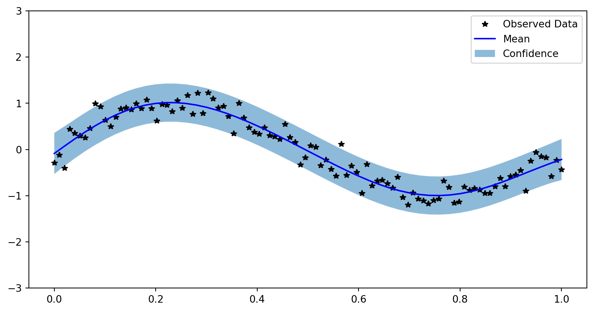

ECON622: Computational Economics with Data Science Applications
Introduction to Kernel Methods and Gaussian Processes
Overview
Motivation
- We have discussed various forms of representation learning and function approximation including neural networks, LLS, etc.
- Another type of approach is called “Instance (or Exemplar) Based Learning” of which Kernel Methods and Gaussian Processes are a special case
- The idea there is that we find approximations from the data by keeping track of all observations and use them for inference
- These methods are non-parametric in the sense that the number of parameters grows with the number of data points
- Often Bayesian in practice, which provides regularization and inference
Limitations and Advantages
- While it seems like this is limiting to cases with small amounts of data
- We have already explored high-dimensional linear algebra methods (e.g., matrix-free, iterative methods, preconditioning)
- Many problems in economics do not have an enormous number of observations, or we have choice on where the observations occur
- Typically these methods are used without any “representation learning”, but at the end we will give some pointers to how these methods generalize to allow representation learning
- One major benefit of these methods to economists is that they will provide posteriors in a function space, which we can use for inference
References
- These notes are a bare-bones introduction. Look to other references
- ProbML Book 1 Section 17 and ProbML Book 2 Section 18
- Gaussian Processes for Machine Learning a beloved textbook available online
- UBC CPSC 340 and Mark Schmidt’s Topics Notes
- Machine Learning with Kernel Methods course with youtube lectures
Normal Equations
Reminder: Normal Equations for Ridge Regression
Let \(x \in \mathbb{R}^M\) be observations and \(X \in \mathbb{R}^{N \times M}\) be the “design” matrix
To solve \(\min_{\theta}\left\{||X \theta - y||^2 + \frac{\lambda}{2}||\theta||^2\right\}\) for \(\lambda \geq 0\), form normal eqs.
\[ \theta = (X^{\top}X + \lambda I)^{-1} X^{\top} y \]
- The \(X^{\top}X \in \mathbb{R}^{M\times M}\) is in the “feature” space and of size \(M\)
The “Other” Normal Equations
Without proof, terms out you can rearrange this expression to get the “other” normal equations
\[ \theta = X^{\top} (X X^{\top} + \lambda I)^{-1} y \]
- \(X X^{\top} \in \mathbb{R}^{N\times N}\) is called the Gram matrix
- \([X X^{\top}]_{ij} = x_i \cdot x_j\). i.e., pairwise comparisons of all data
Since \(M \ll N\) typically, often a bigger system to solve
- But note that we we have rewritten as pairwise comparisons
Prediction with Kernels
- Define \(\mathcal{K}(x,x') \equiv x \cdot x'\), then
\[ K_{ij} \equiv [X X^{\top}]_{ij} = \mathcal{K}(x_i, x_j)\,\text{ for i = 1, ..., N and j = 1, ..., N} \]
- Now, assume we received \(P\) new points of data \(\tilde{X}\) and want to predict \(\tilde{y}\)
\[ \tilde{K}_{ij} \equiv \mathcal{K}(\tilde{x}_i, x_j),\,\text{ for i = 1, ..., P and j = 1, ..., N} \]
- Finally (see linked derivations), can predict with
\[ \tilde{y} = \tilde{K} (K + \lambda I)^{-1} y \]
Are Working with Pairwise Comparisons Better?
- We have rewritten the normal equations in terms of pairwise comparisons (the Gram matrix) using some function \(\mathcal{K}(x,x')\equiv x \cdot x'\)
- Is this computationally preferable for standard applications of OLS?
- Probably not unless \(M\) is very large
- The real advantage is that by rewriting the problem in terms of pairwise comparisons we can generalize to other functions \(\mathcal{K}(x,x')\)
- This is the basis of kernel methods and Gaussian processes
Features and The Kernel Trick
Motivation from Classification
- One starting point here is to consider simple problems of separating hyperplanes and binary classification
- If we transform our data, sometimes into higher dimensions, then we can find separating hyperplanes
- i.e., with the right “features”, many problems become linear
- See CPSC 340
Transforming with Polynomials

https://members.cbio.mines-paristech.fr/~jvert/svn/kernelcourse/slides/master2017/master2017.pdf
Do we Need to Form the Features?
- In the previous with \(x \in \mathcal{D}\), we could have:
- For all \(x\equiv \begin{bmatrix}x_1 & x_2\end{bmatrix}^{\top}\)
- Calculate \(x \mapsto \phi(x) \equiv \begin{bmatrix}x_1^2 & \sqrt{2} x_1 x_2 & x_2^2 &\end{bmatrix}^{\top}\)
- This is creating our new “features”
- Then run standard classification algorithms on the new features
- Define \(\mathcal{K}(x,x') \equiv \phi(x) \cdot \phi(x')\)
- Then use \(\mathcal{K}(x,x')\) rather than explicitly designing the \(\phi(\cdot)\) or calculating \(\phi(x)\) for \(x\in \mathcal{D}\)
Example with Polynomial Kernels
Generalizing our previous case, \(\mathcal{K}(x,x') \equiv (x \cdot x')^2\), to polynomial order \(p\) with cross-products \[ \mathcal{K}(x,x') \equiv (x \cdot x' + c)^p \]
The dimensionality of the underlying \(\phi(x)\) is combinatorial in \(p\)
But now we can just evaluate pairwise \(\mathcal{K}(x,x')\), just an inner product in \(M\) independent of \(p\)!
The cost will be that we need to store the \(N \times N\) matrix of pairwise comparisons
The Kernel Trick
- Note in the previous examples that we never formed the \([\phi(x_i)]_{i=1}^N\)
- Even further, we didn’t need to even write down the \(\phi(x)\) function explicitly
- This is called the “Kernel Trick” and is the basis of Kernel Methods
- By choosing a \(\mathcal{K}(x,x')\) and using “the other normal equations” or similar formulations in other algorithms, you implicitly define features \(\phi(x)\)
- In fact, the \(\phi(x)\) may be infinite dimensional!
- The downside is that this will require keeping track of all previous observations (as we did with the normal equations forming \(\tilde{K}\))
Kernelized Methods
- Many ML methods are “kernelized”, which means that they are written in terms of pairwise comparisons for a given kernel
- A kernelized regression just takes the standard \(\mathcal{K}(x,x') = x \cdot x'\) and lets us swap out with other \(\mathcal{K}(x,x')\)
- For example, the Support Vector Machines (SVM) are just kernelized linear classifiers. There kernelized versions of PCA, etc.
- These are powerful because they enable us to work with (often linear) methods in a richer feature space
- But we have to choose the right sorts of kernels to deliver those features
- Next we build a little intuition on kernels before formalizing GPs
Kernels
Kernels as Similarity Measures
Our canonical example is \(\mathcal{K}(x,x') = x \cdot x'\), which is a measure of similarity between \(x\) and \(x'\). Note that \[ ||x - x'||_2 = \sqrt{\mathcal{K}(x, x) - 2 \mathcal{K}(x,x') + \mathcal{K}(x', x')} \]
Fix the lengths \(||x||_2 = ||x'||_2 = 1\) then notice that \(||x - x'||_2 = \sqrt{2 (1 - \mathcal{K}(x,x'))}\)
As \(\mathcal{K}(x,x')\) increases, the distance between \(x\) and \(x'\) decreases
Also notice that when \(\mathcal{K}(x,x') = 0\) (i.e. orthogonal since \(x \cdot x' = 0\)) we maximize the distance between \(x\) and \(x'\)
Gaussian Kernel
- One of the most commonly used kernels is called the radial basis function(RBF) kernel, also known as the Gaussian kernel
\[ \mathcal{K}(x, x';\ell) \equiv \exp(-\frac{||x - x'||_2^2}{2 \ell^2}) \]
- Note that this uses the Euclidean norm, but we could use other norms
- The \(\ell\) is a scale which determines the distances over which we expect differences to matter
- Kernels which are only a function of some distance between \(x\) and \(x'\) (where the location is irrelevant) are called stationary kernels
Example Kernels
- See ProbML Book 2 Section 18.2 for more and Mercer’s Theorem - which shows all kernels are associated with an inner product in some orthonormal feature space
- Polynomial kernel \(\mathcal{K}(x,x') = (x \cdot x' + c)^p\) for \(p \in \mathbb{N}\) the polynomial order, including \(p=1\) which is just the linear kernel
- Other kernels can be richer and depend on the data (e.g., for network, text, image data). Pick your \(\mathcal{K}(x,x')\) to implement similarity measures
- Can construct kernels from other kernels (e.g. \(\exp(\mathcal{K}(x,x'))\) is a valid kernel)
- Kernel functions could even be neural networks (Deep Kernels)
- Kernels typically have parameters (e.g., \(\ell\) in the Gaussian kernel) which must be fit - usually by maximizing the marginal likelihood
Gaussian Processes
Parameter Space vs. Function Space
- There are two basic approaches to understanding Gaussian Processes (GPs)
- The parameter (or weight) space
- The function space
- See the Gaussian Processes for Machine Learning chapter 2 for more details
- Given what you have learned about the kernel trick, you can probably understand a lot of the “parameter space” approach yourself.
- Read both, but we will focus on the function space - which is its main advantage
Gaussian Processes
- A Gaussian processes are random functions where for any finite set of points \(x_1, ..., x_N \in \mathcal{D}\), the marginal distribution \(f(x_1), ..., f(x_N)\) is a multivariate Gaussian distribution
- Another way to think about a GP is that it is a collection of random variables, any finite number of which have a joint Gaussian
Why Random Functions?
- The random functions with GPs enable us to have
- distributions over functions
- priors and posteriors in function spaces
- meaningful notions of norms to compare functions and regularize them
- Uncertainty Quantification: An issue with ERM-methods (including deep learning) is that they find a single function (think MLE or MAP solutions)
- Alternatives like sample-splitting, cross-validation are limited in their ability to quantify uncertainty
- Surrogates: GPs can be used to form probabilistic surrogate functions given data. Then we can use those surrogates for optimization, uncertainty quantification, etc.
Bayesian Optimization and Its Generalizations
- One particularly useful application is Bayesian optimization
- The idea, used in Kriging and many HPO methods
- For \(y = f(x)\) function, which is expensive and blackbox
- Take observables \((y_i, x_i)\) and form a GP surrogate
- Optimize that surrogate instead of the original function to get a new \(\tilde{x}\)
- Evaluate the true function \(f(\tilde{x})\) to get \(\tilde{y}\)
- Update the surrogate with the new data and repeat
- The idea of bayesian optimization and information aquisition (i.e. the next point to evaluate) is very general and can be applied to many problems
Mean and Covariance Functions
Unsurprisingly, since Gaussian random variables can be characterized by the first two moments, so can GPs
Let the mean function be
\[ m(x) = \mathbb{E}[f(x)] \]
And the covariance function (kernel) be
\[ \mathcal{K}(x,x') = \mathbb{E}[(f(x) - m(x))(f(x') - m(x'))] \]
Then we can denote a GP as
\[ f(x) \sim GP(m(x), \mathcal{K}(x,x')) \]
Probability of Observables
- Let \(f_X \equiv [f(x_i)]_{i=1}^N\), then because it is jointly Gaussian, we can write the probability of the observables as
\[ \begin{aligned} f_X\,|\,X &\sim \mathcal{N}(\mu_X, K_{XX})\\ \mu_X &\equiv [m(x_i)]_{i=1}^N\\ K_{XX} &\equiv [\mathcal{K}(x_i, x_j)]_{i,j=1}^N \end{aligned} \]
Conditional Forecasts
Let \(X\) and \(f_X\) be observable (without noise in simplest case)
Let \(\tilde{X}\) be new data where we want to forecast the distribution of \(f_{\tilde{X}}\)
See ProbML Book 2 Section 18.3 for more details
\[ \begin{aligned} f_{\tilde{X}}\,|\,X, f_X, \tilde{X} &\sim \mathcal{N}(\mu_{\tilde{X}}, \Sigma_{\tilde{X}})\\ \mu_{\tilde{X}} &\equiv \mu_{\tilde{X}} + K_{X\tilde{X}}^{\top} K_{XX}^{-1} (f_X - \mu_X)\\ \Sigma_{\tilde{X}} &\equiv K_{\tilde{X}\tilde{X}} - K_{X\tilde{X}}^{\top} K_{XX}^{-1} K_{X\tilde{X}} \end{aligned} \]
Can adjust for noisy observation \(y = f(x) + \sigma^2 \epsilon\) for \(\epsilon \sim \mathcal{N}(0,I)\) easily
Example Posteriors (ProbML Book 2 Section 18.3.2)

Reproducing Kernel Hilbert Spaces (RKHS)
- See ProbML Book 2 Section 18.3.7 for more details
- Since we are working with function spaces, and there is an implicit inner product \(\phi(x)\) associated with the kernel \(\mathcal{K}(x,x')\)
- We can construct a Hilbert Space using those inner products
- Denote the space \(\mathcal{H}_{\mathcal{K}}\) for kernel \(\mathcal{K}\)
- All inner product spaces induce a norm, so we can write \(||f||_{\mathcal{H}_{\mathcal{K}}}\)
ERM in a Function Space
- ERM in a function space with LLS and a norm \(||f||\)
\[ \min_{f \in \mathcal{F}} \left\{\sum_{n=1}^N (y_n - f(x_n))^2 + \frac{\lambda}{2}||f||\right\} \]
- If we use the RKHS function space associated with our kernel, we have the kernel ridge regression
\[ \min_{f \in \mathcal{H}_{\mathcal{K}}} \left\{\sum_{n=1}^N(y_n - f(x_n))^2 + \frac{\lambda}{2}||f||_{\mathcal{H}_{\mathcal{K}}}\right\} \]
Representer Theorem
See ProbML Book 2 Section 18.3.7.3 for more details
The representer theorem says that a solution to ERM in a function space
\[ f^* = \arg\min_{f \in \mathcal{H}_{\mathcal{K}}} \left\{\sum_{n=1}^N\ell(f, x_n, y_n) + \frac{\lambda}{2}||f||_{\mathcal{H}_{\mathcal{K}}}\right\} \]
- Has a solution, for some coefficients \(\alpha_n\) a function of the data
\[ f^*(x) = \sum_{n=1}^N \alpha_n \mathcal{K}(x, x_n) \]
- See ProbML Book 2 for solutions for kernel ridge regression
Fitting GPs
- Kernels themselves typically have parameters which must be fit/learned/etc. from the data
- e.g. the \(\ell\) bandwidth in the Gaussian kernel
- This is typically done with maximum marginal likelihood or MAP
- See ProbML Book 2 Section 18.3.5 and 18.6 for more details
- Crucially, we can “learn the kernel” to mix representation learning with kernel methods/GPs
Manually Fitting a GP
- Assume \(m(x) = 0\) for simplicity
- Remember \(K_{XX} \equiv [K_{ij}]_{i,j=1}^N\) and \(\mathbf{\alpha}\equiv [\alpha_i]_{i=1}^N\) then, \[ ||f^*||_{\mathcal{H}_{\mathcal{K}}} = \sqrt{f^*\cdot f^*} = \sqrt{\mathbf{\alpha}^{\top} K_{XX} \mathbf{\alpha}} \]
- Substitute into the Representer Theorem \[ \begin{aligned} &\min_{f \in \mathcal{H}_{\mathcal{K}}} \left\{\sum_{n=1}^N\ell(f, x_n, y_n) + \frac{\lambda}{2}||f||_{\mathcal{H}_{\mathcal{K}}}\right\}\\ &\min_{\mathbf{\alpha}} \left\{\sum_{n=1}^N\ell\left(\sum_{i=1}^N \alpha_n \mathcal{K}(x_n, x_i), x_n, y_n\right) + \sqrt{\frac{\lambda}{2}\mathbf{\alpha}^{\top} K_{XX}\mathbf{\alpha}}\right\} \end{aligned} \]
Mean Functions and Hyperparameters
- Kernels often have hyperparameters \(\theta\) (e.g., bandwidth) and parametric \(m(x;\eta, \theta)\)
- Let \(K_{XX}(\theta) \equiv [K(x_i, x_j;\theta)]_{i,j=1}^N, \mathbf{x} \equiv [x_n]_{n=1}^N, \mathbf{y} \equiv [y_n]_{n=1}^N,\) and \(\mathbf{m}(\eta;\theta)\equiv [m(x;\theta, \eta)]_{n=1}^N\)
- Often loss is written in terms of residuals, \(\mathbf{r}(f, \mathbf{x}, \mathbf{y})\) where \(\sum_{n=1}^N \ell(f, x_n, y_n) = ||\mathbf{r}(f, \mathbf{x}, \mathbf{y})||_2^2\)
- Then we can usually write the optimization problem as \[ \begin{aligned} \min_{\mathbf{\alpha}, \eta} &\left\{ ||\mathbf{r}(K_{XX}(\theta)\cdot \mathbf{\alpha}+ \mathbf{m}(\eta, \theta);\theta, \eta)||_2^2 + \sqrt{\frac{\lambda}{2}\mathbf{\alpha}^{\top}\cdot K_{XX}(\theta)\cdot\mathbf{\alpha}}\right\}\\ \end{aligned} \]
- Then an outer optimization process for \(\theta\)!
Ridgeless Kernel Solution
Recall the min-norm, ridgeless OLS: \[ \lim_{\lambda \to 0} \arg\max_{\alpha} ||\alpha \cdot X - y||^2_2 + \lambda ||\alpha||^2_2 = \arg\max_{\alpha} ||\alpha||_2^2 \text{ s t. } \alpha \cdot X = y \]
With interpolating problem (i.e., \(\mathbf{r}(\cdot) = 0\) possible) take \(\lambda \to 0\) in Representer
\[ \begin{aligned} \min_{\mathbf{\alpha}, \eta} &\left\{\mathbf{\alpha}^{\top}K_{XX}(\theta)\mathbf{\alpha}\right\}\\ \text{s.t. }\, & \mathbf{r}(K_{XX}(\theta)\cdot \mathbf{\alpha}+ \mathbf{m}(\eta, \theta);\theta, \eta) = 0 \end{aligned} \]
- i.e. the min-norm (according to \(|f||_{\mathcal{H}_{\mathcal{K}}}\)) interpolating solution
- Can stack inequalities, additional constraints etc.
- With linear (in \(\mathcal{H}_{\mathcal{K}}\)) residuals/constraints can use very fast LQ solvers
- More explicit and reliable than the inductive bias in neural networks
GPytorch
GPytorch
- One can manually create kernels and run the optimizer, or use a package such as GPyTorch
- See examples/gpytorch_regression.py
Example Training Data
Choosing Kernels
- Kernels can be created from other kernels. e.g., given \(\mathcal{K}(x,x')\),
- \(\exp(\mathcal{K}(x,x'))\) is a valid kernel
- \(C \mathcal{K}(x,x')\) for a fixed scaling \(C > 0\)
- See the docs for more
- Also, we can provide a “learnable” mean, \(m(x)\) for the process
- e.g.
gpytorch.means.ConstantMean(), but could be function of \(x\)
- e.g.
Simple GP Model with exact inference
class ExactGPModel(gpytorch.models.ExactGP):
def __init__(self, train_x, train_y, likelihood):
super(ExactGPModel, self).__init__(train_x, train_y, likelihood)
self.mean_module = gpytorch.means.ConstantMean()
self.covar_module = gpytorch.kernels.ScaleKernel(gpytorch.kernels.RBFKernel())
def forward(self, x):
mean_x = self.mean_module(x)
covar_x = self.covar_module(x)
return gpytorch.distributions.MultivariateNormal(mean_x, covar_x)Setup likelihood and Loss
likelihood = gpytorch.likelihoods.GaussianLikelihood()
model = ExactGPModel(train_x, train_y, likelihood)
model.train()
likelihood.train()
optimizer = torch.optim.Adam(model.parameters(), lr=0.1) # Includes GaussianLikelihood parameters
# "Loss" for GPs - the marginal log likelihood
mll = gpytorch.mlls.ExactMarginalLogLikelihood(likelihood, model)Run the Optimizer
Iter=0, Loss=0.9302332997322083
Iter=10, Loss=0.5079350471496582
Iter=20, Loss=0.17511649429798126
Iter=30, Loss=-0.02991340681910515
Iter=40, Loss=-0.020419616252183914
Iter=50, Loss=-0.034119490534067154
Iter=60, Loss=-0.03867233172059059
Iter=70, Loss=-0.0389210507273674
Iter=80, Loss=-0.04004982113838196
Iter=90, Loss=-0.039925917983055115GaussianLikelihood(
(noise_covar): HomoskedasticNoise(
(raw_noise_constraint): GreaterThan(1.000E-04)
)
)Visualize Results
with torch.no_grad(), gpytorch.settings.fast_pred_var():
test_x = torch.linspace(0, 1, 51)
observed_pred = likelihood(model(test_x))
fig, ax = plt.subplots()
lower, upper = observed_pred.confidence_region()
ax.plot(train_x.numpy(), train_y.numpy(), 'k*')
ax.plot(test_x.numpy(), observed_pred.mean.numpy(), 'b')
# Shade between the lower and upper confidence bounds
ax.fill_between(test_x.numpy(), lower.numpy(), upper.numpy(), alpha=0.5)
ax.set_ylim([-3, 3])
ax.legend(['Observed Data', 'Mean', 'Confidence']) Visualize Results
